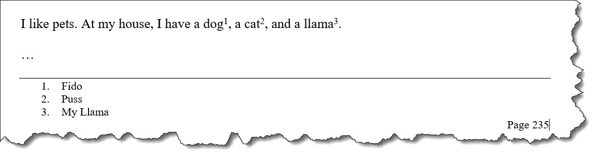

<fn>
A footnote is ancillary information that typically is rendered in the footer of a page or at the end of an online article. Such content is usually inappropriate for inline inclusion.
Usage information
There are two types of footnotes: single-use footnote and use-by-reference footnote.
- Single-use footnote
- This is produced by a
<fn>element that does not specify a value for the@idattribute. - Use-by-reference footnote
- This is produced by a
<fn>element that specifies a value for the@idattribute. It must be used in conjunction with an<xref>element with@typeset to fn.
To reference a footnote that is located in another topic, the conref or conkeyref mechanism is used.
Rendering expectations
The two footnote types typically produce different types of output:
- Single-use footnote
- When rendered, a superscript symbol (numeral or character) is produced at the
location of the
<fn>element. The superscript symbol is hyperlinked to the content of the footnote, which is placed at the bottom of a PDF page or the end of an online article. The superscript symbol can be specified by the value of the@calloutattribute. When no@calloutvalue is specified, footnotes are typically numbered. - Use-by-reference footnote
- Nothing is rendered at the location of the
<fn>element. The content of a use-by-reference footnote is only rendered when it is referenced by an<xref>with the@typeattribute set to fn. If an<xref>with the@typeattribute set to fn is present, a superscript symbol is rendered at the location of the<xref>element. Unless conref or conkeyref is used, the<fn>and<xref>must be located in the same topic.
However, the details of footnote processing and formatting are implementation dependent.
For example, a tool that renders DITA as PDF might lack support for the
@callout attribute, or footnotes might be collected as end notes for
certain types of publications.
Attributes
The following attributes are available on this element: universal attributes and the attribute defined below.
Examples
This section contains examples of how the <fn> element can be
used.
The following code sample shows a single-use footnote. It contains a simple
<fn> element, with no @id or
@callout attribute.
<p>The memory storage capacity of the computer is
2 GB<fn>A GB (gigabyte) is equal to
1000 million bytes</fn> with error correcting support.</p>When rendered, typically a superscript symbol is placed at the location of the
<fn> element; this superscript symbol is hyperlinked to the
content of the <fn>, which is typically placed at the bottom of a
PDF page or the end of an online article. The type of symbol used is implementation
specific.
The above code sample might produce the following output similar to the following:

@callout attributeThe following code sample shows a single-use footnote that uses a
@callout attribute:
<p>The memory storage capacity of the computer is
2 GB<fn callout="#">A GB (gigabyte) is equal to
1000 million bytes</fn> with error correcting support.</p>The rendered output is similar to that of the previous example, although processors that support it will render the footnote symbol as # (hashtag).
The following code sample shows use-by-reference footnotes. The
<fn> elements have @id attributes, and inline
<xref> elements reference those <fn>
elements:
<section>
<fn id="dog-name">Fido</fn>
<fn id="cat-name">Puss</fn>
<fn id="llama-name">My llama</fn>
<!-- ... -->
<p>I like pets. At my house, I have a dog<xref href="#topic/dog-name" type="fn"/>, a
cat<xref href="#topic/cat-name" type="fn"/>, and a
llama<xref href="#topic/llama-name" type="fn"/>.</p>
</section>The code sample might produce output similar to the following:

The following code sample shows footnotes stored in a shared topic (footnotes.dita):
<!-- Content from footnotes.dita -->
<topic id="footnotes">
<title>Shared topic...</title>
<body>
<bodydiv>
<fn id="strunk">Elements of Style</fn>
<fn id="DQTI">Developing Quality Technical Information, 2nd edition</fn>
<!-- ... -->
</bodydiv>
</body>
</topic>To use those footnotes, authors conref them into the relevant topics:
<p>See the online resource<fn conref="footnotes.dita#footnotes/DQTI"/> for more
information about how to assess the quality of technical documentation ...</p>The following code sample shows a use-by-reference footnote that uses conref:
<topic id="evaluating-quality">
<title>Evaluating documentation quality</title>
<body>
<bodydiv>
<fn conref="footnotes.dita#footnotes/DQTI" id="dqti"/>
</bodydiv>
<!-- ... -->
<p>See the online resource<xref="#./dqti" type="fn"/> for more
information about how to assess the quality of technical documentation ...</p>
<!-- ... -->
</body>
<topic>